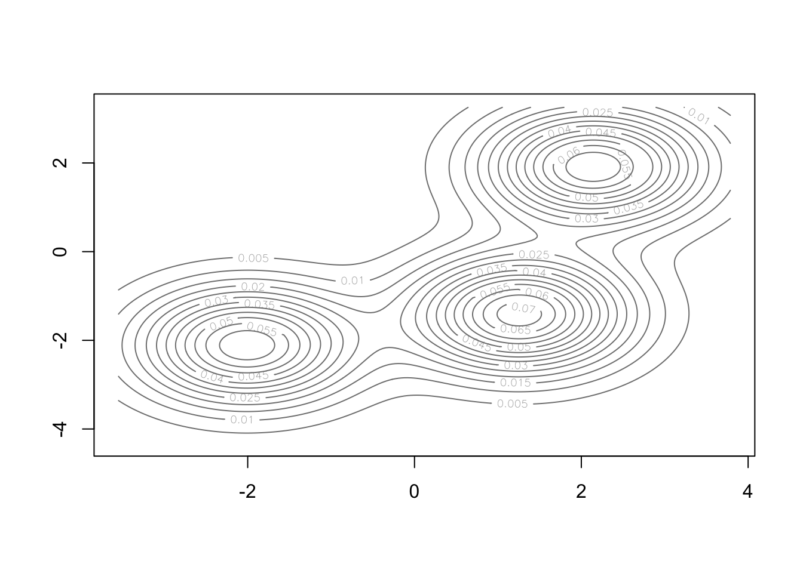
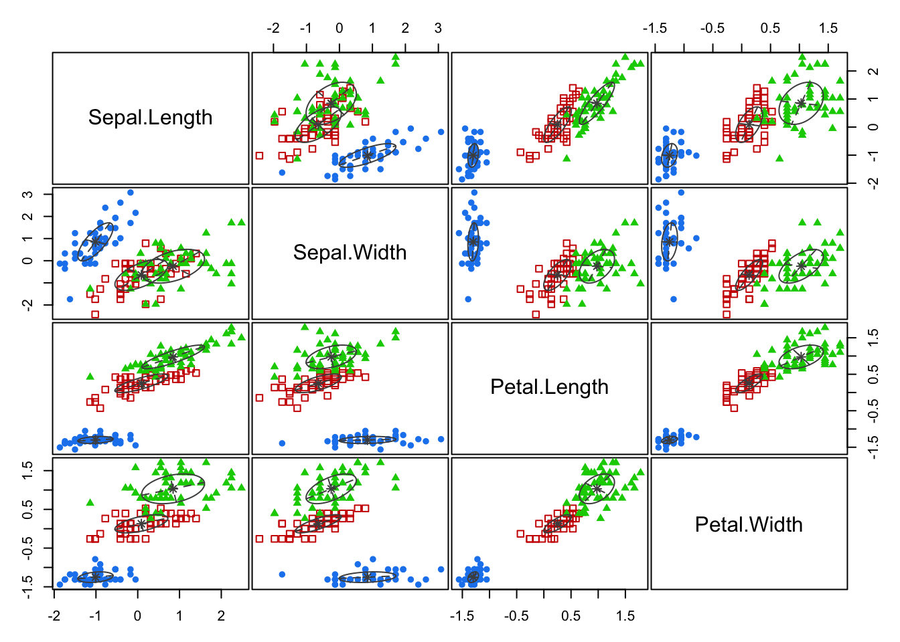
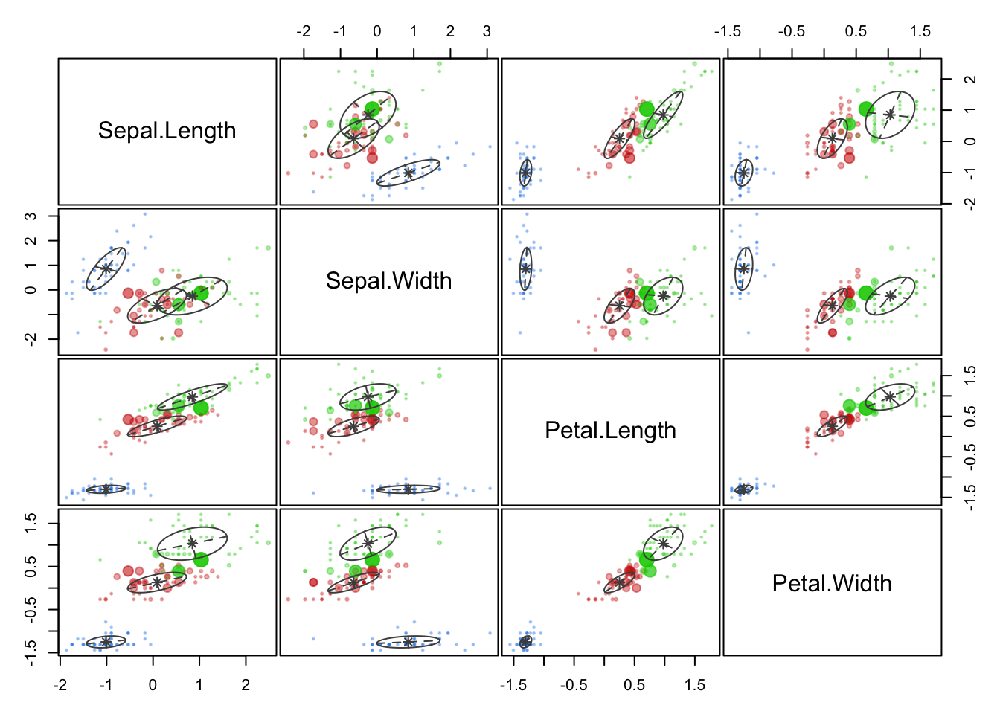
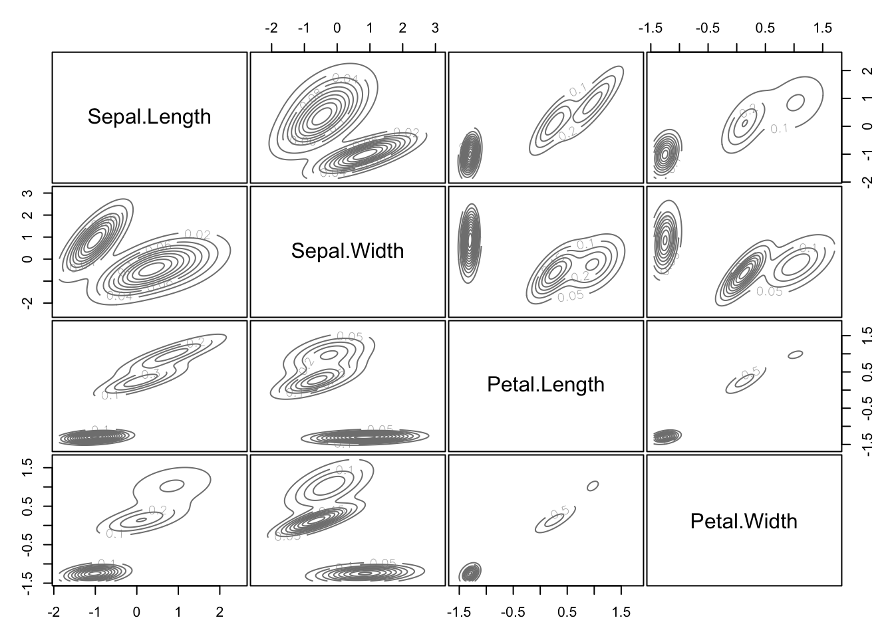
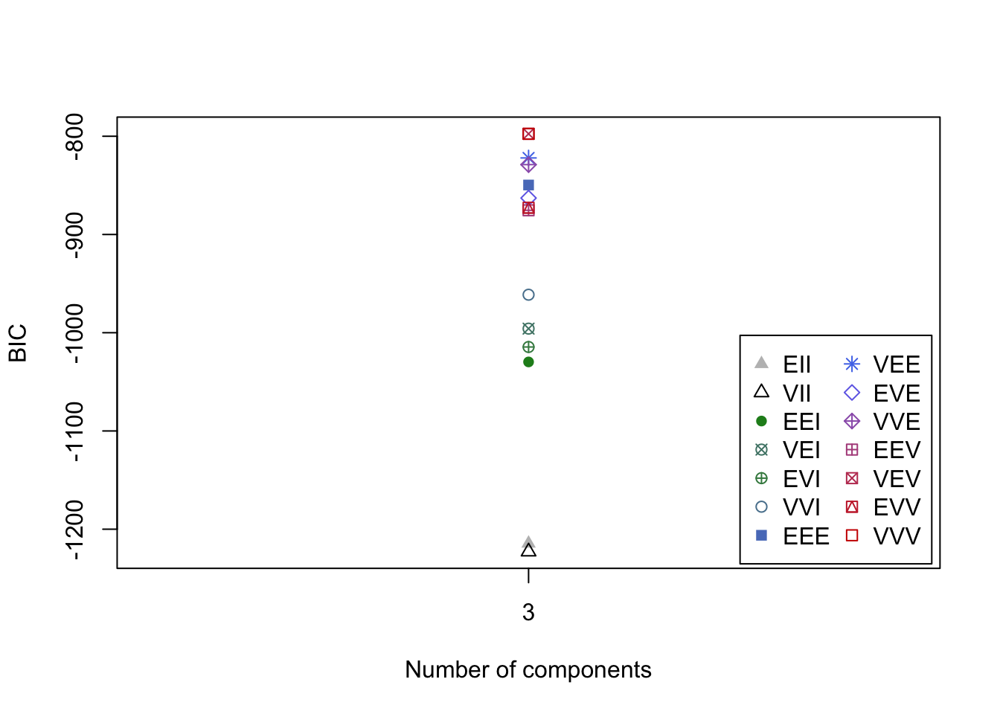

# Part (a) generate data:
#
K = 3 # the number of classes
n = 20 # the number of samples per class
p = 2 # the number of variables
set.seed(123)
# Create data for class 1:
X_1 = matrix( rnorm(n*p), nrow=n, ncol=p )
for( row in 1:n ){
X_1[row,] = X_1[row,] + rep( 2, p )
}
# Create data for class 2:
X_2 = matrix( rnorm(n*p), nrow=n, ncol=p )
for( row in 1:n ){
X_2[row,] = X_2[row,] + rep( -2, p )
}
# Create data for class 3:
X_3 = matrix( rnorm(n*p), nrow=n, ncol=p )
for( row in 1:n ){
X_3[row,] = X_3[row,] + c( rep( 1, p/2 ), rep( -1, p/2 ) )
}
X <- rbind(X_1, X_2, X_3)Lecture8a - Model Based Clustering
The clustering methods that we have discussed so far neither involve any sort of model nor are based on a density estimate. Model-based clustering considers the data as coming from a distribution that is a mixture of two or more clusters.
Model-based clustering: the Gaussian mixture model
In the Gaussian mixture model, each cluster \(C_k\) is modelled by a random variable with a multivariate normal distribution \(N_p(\mu_{k}, \Sigma_{k})\). Recall that we have:
- \(\mu_{k}:\) mean vector for the \(k\)-th cluster
- \(\Sigma_{k}:\) covariance matrix for the \(k\)-th cluster
Aside
To get a better idea of how such a distribution looks like, we can visualize the joint probability distribution in some simple cases, such as the one of 3 clusters and 2 variables. We use the data generating process code seen previously (but with different parameters):
library(mclust)
ex.mc <- Mclust(X, G=3)
plot(ex.mc, what = "density")
The model parameters \(\mu_{k}\) and \(\Sigma_{k}\) can be estimated using the Expectation-Maximisation (EM) algorithm.
As a result, each observation point \(x\) comes with a probability of belonging to a cluster \(p_k(x)\). These probabilities satisfy
\[p_1(x)+\dots+p_n(x)=1,\] where \(n\) is the total number of clusters, as we are assuming that all points belong to some cluster. This method has been implemented in the mclust package in R.
Since the model is based on maximum likelihood estimation, criteria such as BIC (Bayesian Information Criterion) and AIC (Akaike Information Criterion) can be used for the selection of the number of clusters.
We briefly recall the form of these two criteria:
\[AIC = -2logL +2p\] \[BIC = -2logL +log(n)p\] where \(logL\) is the model log-likelihood, \(p\) is the number of parameters and \(n\) is the number of observations. In general, we want these quantities to be small. The model with the smallest value of the criterion is selected as the best.
AIC tends to choose more components, focuses on predictive accuracy
BIC applies a stronger penalty, so often chooses fewer components. It is more commonly used for selecting the number of clusters.
Let us see how good model based clustering is on the iris data set.
iris.scaled <- scale(iris[, -5]) # Standardise the data
mc <- Mclust(iris.scaled, G = 3) # Model-based-clustering, G=3 indicates a request for 3 clusters
summary(mc)----------------------------------------------------
Gaussian finite mixture model fitted by EM algorithm
----------------------------------------------------
Mclust VVV (ellipsoidal, varying volume, shape, and orientation) model with 3
components:
log-likelihood n df BIC ICL
-288.5255 150 44 -797.519 -800.7391
Clustering table:
1 2 3
50 45 55 The result indicates that there are 50 observations in cluster 1, 45 in cluster 2 and 55 in cluster 3.
We can examine the variables created within object mc:
names(mc) [1] "call" "data" "modelName" "n"
[5] "d" "G" "BIC" "loglik"
[9] "df" "bic" "icl" "hypvol"
[13] "parameters" "z" "classification" "uncertainty" The value that is of utmost importance in the object created is classification. These are the newly created clusters.
mc$classification [1] 1 1 1 1 1 1 1 1 1 1 1 1 1 1 1 1 1 1 1 1 1 1 1 1 1 1 1 1 1 1 1 1 1 1 1 1 1
[38] 1 1 1 1 1 1 1 1 1 1 1 1 1 2 2 2 2 2 2 2 2 2 2 2 2 2 2 2 2 2 2 3 2 3 2 3 2
[75] 2 2 2 3 2 2 2 2 2 3 2 2 2 2 2 2 2 2 2 2 2 2 2 2 2 2 3 3 3 3 3 3 3 3 3 3 3
[112] 3 3 3 3 3 3 3 3 3 3 3 3 3 3 3 3 3 3 3 3 3 3 3 3 3 3 3 3 3 3 3 3 3 3 3 3 3
[149] 3 3
As a small task, use the table() function in R to compare the true class labels to the class labels obtained from mclust. Does this result offer any improvement over the K-means clustering results in Workshop 3?
1 2 3
setosa 50 0 0
versicolor 0 45 5
virginica 0 0 50If you implemented this correctly, then Setosa is correctly classified (50 out of 50 correctly classified). 5 observations are misclassified in Versicolor (45 out of 50 correctly classified). Overall, 97% correct classification is obtained under the model-based clustering, whereas it was 88% under K-medoids and 83.3% under K-means.
You can obtain four different types of plot from the mc object that was created.
Model-based clustering plots:
1: BIC
2: classification
3: uncertainty
4: density
We can plot the classification as follows:
plot(mc, what = "classification")
Let us compare the former plot with the one given by selecting the “uncertainty” option:
plot(mc, what = "uncertainty")
In the second one, the classification uncertainty of a point is highlighted by the dimension of the corresponding dot.
We can identify the 5 observations that were misclassified and calculate the classification error rate as follows.
classError(mc$classification, iris[,5])$misclassified
[1] 69 71 73 78 84
$errorRate
[1] 0.03333333
Then, we can have a look at the plot of density functions:
plot(mc, what = "density")
These are the probability density functions of the multivariate normals appearing in the model.
Finally, here is the BIC plot:
plot(mc, what = "BIC")
The available model options in mclust package, are represented by identifiers including: EII, VII, EEI, VEI, EVI, VVI, EEE, EEV, VEV and VVV. So, VVV has been used for our example as the option with the best BIC, but the plot shows that there are different options that return a similar value.
What do these letters mean? The first identifier refers to volume, the second to shape and the third to orientation. E stands for “equal”, V for “variable” and I for “coordinate axes”. VEI, for example, implies that the clusters have variable volume, the same shape and orientation equal to coordinate axes. EEE means that the clusters have the same volume, shape and orientation in p-dimensional space. More on this in the Lab!
To enforce VEV as a model option, for example, you can do the following:
mc_option <- Mclust(iris.scaled, G = 3, modelNames = "VEV")Now, let us try to compare the performance of model options VEV, EVE and VEI to VVV.
You are required to fit the models using the three model options, create a classification table and compare the percentage of correct classification with what we obtained for VVV.
mc_option_VEV <- Mclust(iris.scaled, G = 3, modelNames = "VEV")
table(iris[,5], mc_option_VEV$classification)
1 2 3
setosa 50 0 0
versicolor 0 0 50
virginica 0 34 16(50+50+34)/150[1] 0.8933333mc_option_EVE <- Mclust(iris.scaled, G = 3, modelNames = "EVE")
table(iris[,5], mc_option_EVE$classification)
1 2 3
setosa 50 0 0
versicolor 0 50 0
virginica 0 16 34(50+50+34)/150[1] 0.8933333mc_option_VEI <- Mclust(iris.scaled, G = 3, modelNames = "VEI")
table(iris[,5], mc_option_VEI$classification)
1 2 3
setosa 50 0 0
versicolor 0 48 2
virginica 0 4 46(50+48+46)/150[1] 0.96mc_option_VVV <- Mclust(iris.scaled, G = 3, modelNames = "VVV")
table(iris[,5], mc_option_VVV$classification)
1 2 3
setosa 50 0 0
versicolor 0 45 5
virginica 0 0 50(50+45+50)/150[1] 0.9666667The automatically selected model option, VVV is the best with 97% classification accuracy. This is followed by VEI at 96% accuracy. The worst are the first two at 89.3%, although they are still better than all the previous clustering methods (K-means, K-medoids and Hierarchical). Unsurprisingly, model based clustering performs much better when natural clusters are present in the data!
One should use the BIC criterion (higher values are desirable) to select the number of clusters (G). Consider the case below:
mc_bic <- Mclust(iris.scaled, G = 3)
mc_bic$BICBayesian Information Criterion (BIC):
EII VII EEI VEI EVI VVI EEE
3 -1214.525 -1222.844 -1029.733 -995.8343 -1014.515 -961.3205 -849.6448
VEE EVE VVE EEV VEV EVV VVV
3 -822.076 -862.9077 -828.8731 -875.3724 -797.5483 -872.7515 -797.519
Top 3 models based on the BIC criterion:
VVV,3 VEV,3 VEE,3
-797.5190 -797.5483 -822.0760 You will observe that the results included the top 3 model options based on the BIC criterion. In fact, if no number of clusters is specified, the algorithm naturally selects the best options using BIC. The downside of this method is that it takes much longer to run:
mc_bic <- Mclust(iris.scaled)
mc_bic$BICBayesian Information Criterion (BIC):
EII VII EEI VEI EVI VVI EEE
1 -1723.766 -1723.766 -1738.7979 -1738.7979 -1738.7979 -1738.7979 -1046.6559
2 -1344.053 -1325.273 -1259.6457 -1172.9600 -1223.9860 -1074.2293 -904.7750
3 -1214.525 -1222.844 -1029.7330 -995.8343 -1014.5146 -961.3205 -849.6448
4 -1177.163 -1139.392 -1044.1118 -965.1348 -1054.2229 -967.7021 -862.7323
5 -1135.642 -1107.791 -958.6219 -905.0241 -983.5054 -928.1301 -821.5159
6 -1131.245 -1102.864 -910.4787 -892.8517 -990.7497 -923.9756 -826.5558
7 -1119.876 -1053.274 -929.8709 -897.4180 -1030.2038 -983.3316 -849.1854
8 -1124.299 -1059.090 -908.1008 -896.1450 -957.1355 -980.8747 -855.9594
9 -1114.899 -1060.444 -912.9422 -918.7055 -984.5159 -972.5093 -869.7734
VEE EVE VVE EEV VEV EVV VVV
1 -1046.6559 -1046.6559 -1046.6559 -1046.6559 -1046.6559 -1046.6559 -1046.6559
2 -873.0048 -906.9282 -880.7933 -873.6590 -802.5253 -875.0084 -790.6956
3 -822.0760 -862.9077 -828.8731 -875.3724 -797.5483 -872.7515 -797.5190
4 -821.5149 -902.9964 -881.1270 -930.1693 -821.4057 -941.9898 -847.2777
5 NA -901.9539 -853.4148 -877.2201 -837.6111 NA -893.2973
6 -826.2392 -873.0654 -865.1217 -905.4942 -879.2801 NA -971.4786
7 NA -913.1458 -898.7411 -953.7660 -920.8553 -1026.5234 -1023.6106
8 -871.9319 -934.3770 -908.8799 -955.7741 -939.3449 -1048.4311 -1047.3167
9 NA -955.8249 -947.9984 -990.5646 -987.1010 -1099.1226 -1100.3729
Top 3 models based on the BIC criterion:
VVV,2 VVV,3 VEV,3
-790.6956 -797.5190 -797.5483 In summary: model-based clustering allows for mixing between clusters, it is useful to give precise metrics of mis-clustering (hence easier to manage outliers), and more flexibility as we are assigning a probability rather than a certainty.